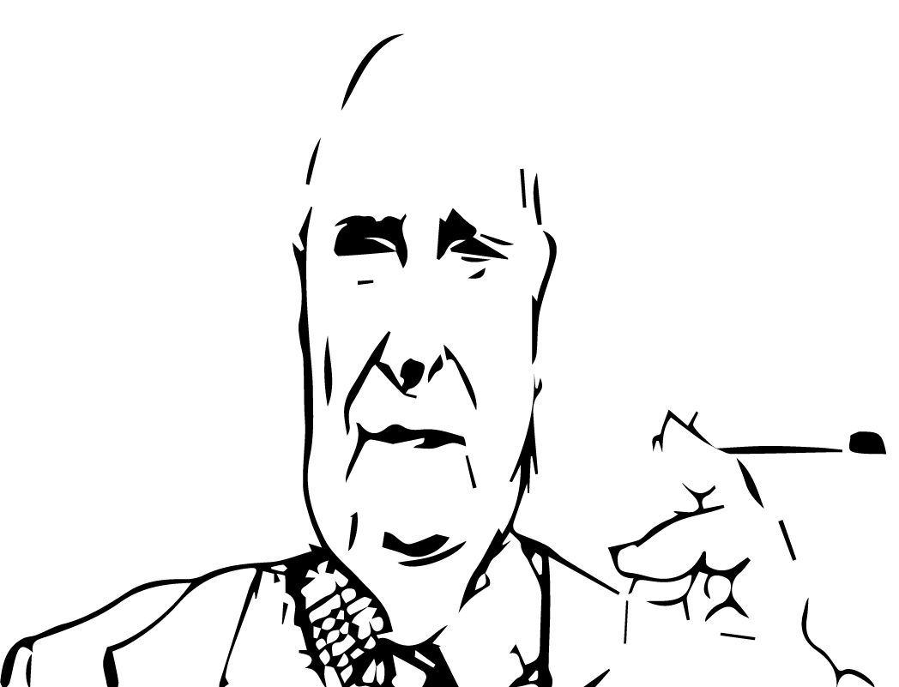

Andrea Calogero Camilleri
È stato colui che ha costruito una
immagine indelebile della sua Sicilia.
Qualcosa sullo scrittore
Nato il 6 settembre del 1925 in Sicilia a Porto Empedocle, lo scrittore, sceneggiatore e regista Andrea Camilleri ha costruito una immagine indelebile della sua Sicilia. Camilleri comincia a pubblicare i suoi saggi e romanzi fin dal 1978, ma è a partire dagli anni Novanta che ottiene il grandissimo successo
di pubblico grazie alla serie sul commissario Montalbano: è stato tradotto in più di cento lingue e ha venduto circa dieci milioni di copie in tutto il mondo. La maggior parte dei suoi libri sono pubblicati in Italia da Sellerio, nella collana La memoria, fondata da Leonardo Sciascia.